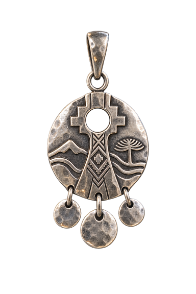
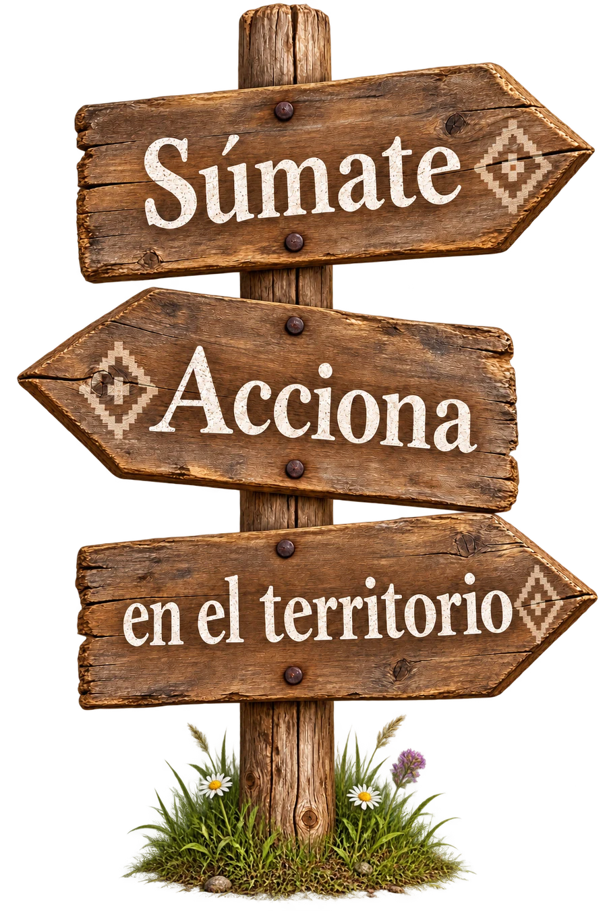

Huerta y agroecología
Acompañamiento en labores de huerta y prácticas agroecológicas, según la temporada, el territorio y la disponibilidad.
Incluido todas las membresías
Ingresas automáticamente con la inscripción de cualquier membresía.
Compartimos nuestra cultura sin fronteras, con el newen de Las Ñañas desde Wallmapu. ¡Chaltumay!

Podrías ser túVOLUNTARIADO · FORMAS DE PARTICIPAR
El voluntariado se organiza a través de membresías. Cada una permite acompañar la red de distintas maneras y desde cualquier lugar del mundo.
Acompañamiento en labores de huerta y prácticas agroecológicas, según la temporada, el territorio y la disponibilidad.
Conversatorios y encuentros para compartir conocimientos entre las mujeres del territorio y quienes se suman desde otros lugares.
Espacios para colaborar desde lo que cada persona sabe hacer: difusión, traducción, diseño, registro y otras habilidades.
Detalles, fechas y la forma de participación de cada actividad se acuerdan junto al equipo de coordinación.
RED DE VOLUNTARIADO · COMUNIDAD INTERNACIONAL

Para acompañar la red desde cualquier lugar del mundo.
$10.000 CLP/ mes
Para participar, aprender y comenzar a vincularte con el territorio.
$15.000 CLP/ mes
Para vivir una experiencia territorial más profunda y acompañada.
$25.000 CLP/ mes
Las experiencias presenciales requieren inscripción previa.
VOLUNTARIADO · APRENDIZAJES COMPARTIDOS
Selecciona para conocer experiencias de voluntarias, como llegó, como lo vivió, que aprendizaje de Las Ñañas se llevó.
Bitácora 01
Relato de ejemplo reemplazable: aquí irá la experiencia autorizada de Alejandra sobre su llegada, lo que compartió y el aprendizaje que se llevó de Las Ñañas.
Bitácora 02
Relato de ejemplo reemplazable: aquí irá la experiencia autorizada de Ayla sobre los saberes compartidos, el territorio y su aprendizaje junto a la comunidad.
Bitácora 03
Relato de ejemplo reemplazable: aquí irá la experiencia autorizada de Carlos sobre su participación, los vínculos creados y aquello que aprendió en Las Ñañas.
VOLUNTARIADO · ANTES DE VIAJAR
No esperamos que llegues con todo resuelto. Aquí conversamos lo práctico con claridad para construir una experiencia cuidada, realista y buena para ambas partes.
Antes de confirmar una visita, coordinamos contigo el punto de encuentro, los contactos, los traslados y las condiciones del lugar. Las actividades se realizan en espacios previamente acordados. Si algo no te da confianza, se conversa y se ajusta: cuidarnos es una responsabilidad compartida.
La conectividad cambia según el sector, la compañía telefónica y el clima. Puede ser intermitente o no estar disponible durante parte del día. Antes de viajar te contaremos lo que sabemos del lugar para que puedas avisar a tu familia, descargar mapas o dejar resueltos trabajos y trámites.
Depende del territorio y de la fecha. Algunas rutas tienen buses o colectivos hasta un punto cercano; otras requieren coordinar el último tramo. Nunca esperamos que adivines el camino: la ruta, los horarios posibles y el punto de encuentro se confirman contigo antes de la llegada.
Las experiencias pueden vincularse con huertas, espacios comunitarios, hogares, rukas o iniciativas asociadas a la red dentro del territorio. No todos los lugares están disponibles siempre: el destino se propone según la actividad, los cupos, la temporada y las condiciones de acceso.
Las horas y las tareas no se fijan de forma unilateral. Antes de comenzar construimos un acuerdo común que considera la duración de la estadía, el tipo de actividad, el ritmo del lugar y tus posibilidades. Lo importante es que sea claro, equilibrado y sostenible para ambas partes.
Sí. El acuerdo es una guía compartida y puede ajustarse cuando aparece cansancio, clima adverso, una necesidad personal o un cambio en las tareas. Lo conversamos a tiempo para cuidar tanto tu experiencia como los compromisos de la comunidad.
No necesitas llegar sabiendo todo. Buscamos una disposición respetuosa para aprender y colaborar. Según la actividad, podrás apoyar en la huerta, la comunicación, el registro, la cocina, el diseño u otras labores que tengan sentido para el momento y para tus habilidades.
Cada convocatoria informará si existe alojamiento, qué condiciones tiene, qué comidas están consideradas y qué debes resolver por tu cuenta. No compres pasajes suponiendo que estos servicios están incluidos: primero confirma por escrito las condiciones de tu experiencia.
Te enviaremos una orientación según la época y la actividad. Habitualmente conviene considerar ropa para lluvia y sol, calzado firme, botella reutilizable, medicamentos personales y una linterna. Cuéntanos con anticipación si tienes una necesidad de salud, alimentación, movilidad o accesibilidad.
Avísanos tan pronto como puedas. Revisaremos contigo la forma más segura de pausar, reorganizar o cerrar la experiencia. También puede haber cambios por clima, acceso o necesidades del territorio; si ocurre, te explicaremos la situación y buscaremos una alternativa posible en común.
Cada experiencia es distinta. Las condiciones definitivas se acuerdan con la coordinación antes de comprar pasajes o iniciar el viaje.
Inscripción
Completa este formulario con tus datos para coordinar tu visita, intereses y estadía. Nos pondremos en contacto contigo a la brevedad.
nanamapuche@gmail.com